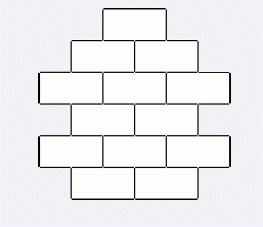

搭一个高度为H，包含N个积木块，并且底层为M个积木的高塔。这个高塔有一个特点，相邻两个塔的积木数相差1。比如当H=6,M=2,N=13：  我们可以这样表示一个高塔，从底层依次纪录每行的积木数，比如这个塔记录成2,3,2,3,2,1。现在任务是，求出至少使用N个砖块，且H和M给出的塔的个数，并且求出字典顺序第K小的塔。（注意不一定要使用完所有的砖块）
第一行三个数N、H、M。以下若干行，每行一个数K。以-1结尾。
第一行一个数，为总数。以下若干行（不超过 10行），对于每个K，给出相应的塔。数据保证K合法。
22 5 4 1 10 -1
10 4 3 2 1 2 4 5 4 5 4
100%的数据N<=32767,H<=60,M<=10